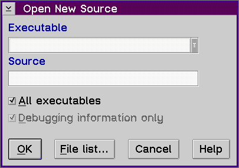

Displays the Open New Source window, which allows you to open a new source file. If you have multiple source files in your program, only one source file is initially displayed. Use the Open New Source window to open additional source files.

To use the Open New Source window:
A123
If you are unsure of the file name, select the File list... push button
to view a list of the files that you can select.